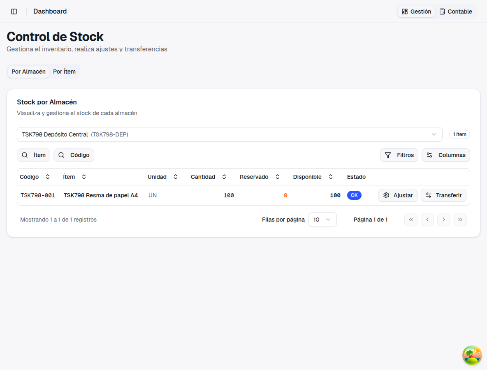
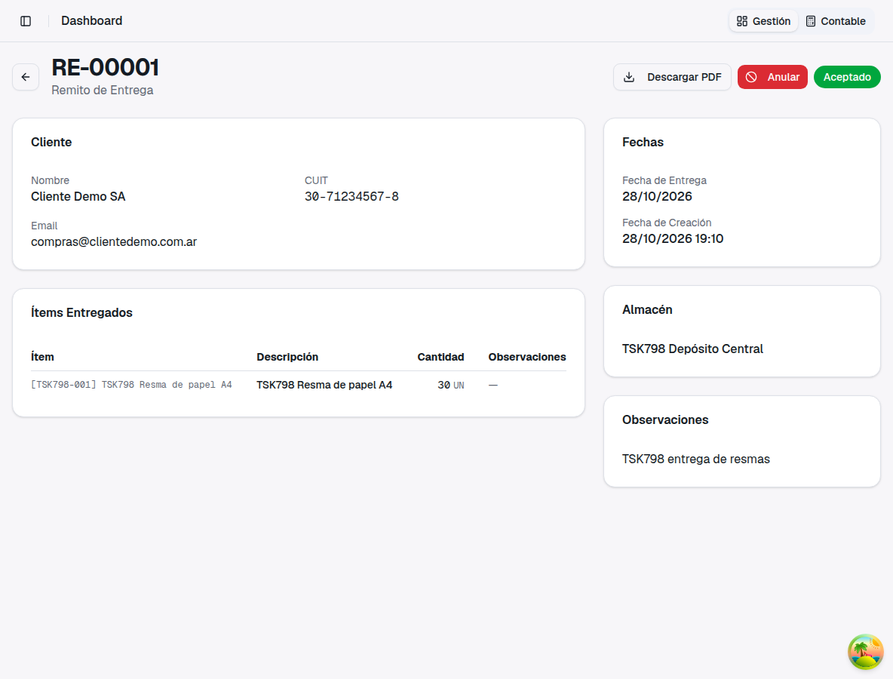
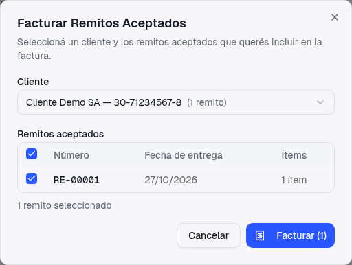
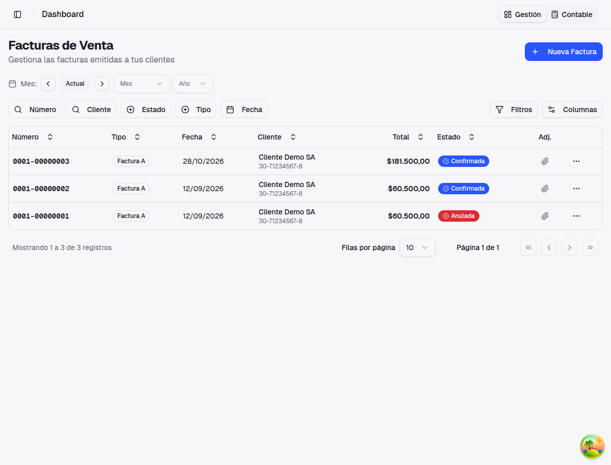
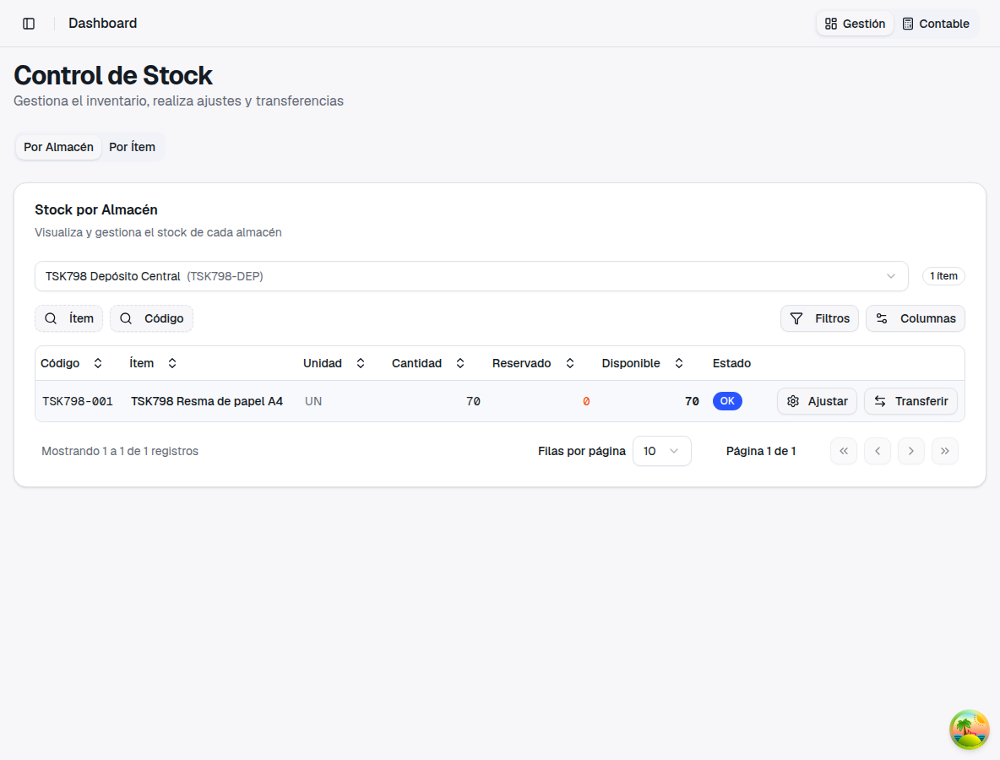
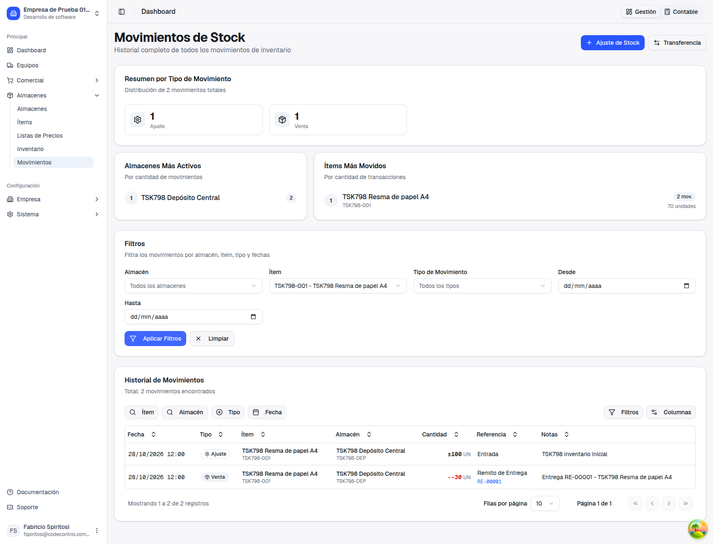

Al facturar remitos, el stock ya no baja dos veces
Guía de presentación — qué pasaba, qué cambió, un ejemplo paso a paso y qué no cambia
1. Qué pasaba
"Al facturar remitos el stock bajaba dos veces"
— ticket 798
El remito de entrega descuenta el stock en el momento en que se crea: la mercadería sale del
depósito con el remito. Después, con Facturar remitos se arma una factura de
venta en borrador con esas mismas líneas. Al confirmar esa factura, el sistema volvía a
descontar la misma mercadería.
El resultado era un stock de menos que no existía en la realidad: lo que se había entregado se
descontaba dos veces.
2. Qué cambió
Antes
Stock inicial: 100 unidades.
Remito de 30: el stock baja a 70.
Se confirma la factura de esos 30: el stock bajaba otra vez, a 40.
Total descontado: 60, para 30 entregadas.
Ahora
Stock inicial: 100 unidades.
Remito de 30: el stock baja a 70.
Se confirma la factura de esos 30: el stock sigue en 70.
Total descontado: 30, para 30 entregadas.
Cuando la factura viene de remitos, el stock que ya salió con el remito
se reconoce, y la factura solo descuenta lo que exceda lo entregado (ver el punto 4).
3. Ejemplo paso a paso
Un depósito con 100 resmas de papel A4. Se entregan 30 resmas a un cliente y se le factura esa entrega.
Stock de partida. En Almacenes → Inventario
el depósito tiene 100 resmas.

Stock antes: 100 unidades.
Remito de entrega. Se crea el remito de 30 resmas para el cliente y se
acepta. El stock baja a 70 en este momento, como siempre.

Remito RE-00001 aceptado: 30 resmas entregadas.
Facturar remitos. En la lista de remitos, el botón
Facturar Remitos permite elegir el cliente y los remitos aceptados. Se genera la
factura en borrador, que todavía no mueve stock.

Se elige el remito y se factura.
Confirmar la factura. Desde el menú de la factura en borrador,
Confirmar. La factura queda confirmada.

Factura confirmada.
Stock después. El inventario sigue en 70: las 30 resmas se descontaron
una sola vez, con el remito.

Stock después de confirmar la factura: 70 unidades (antes de la corrección habría quedado en 40).
Movimientos del ítem. En Almacenes → Movimientos,
filtrando por el ítem, hay un solo movimiento de salida: el del remito. La factura no agrega otro.

Un único movimiento de salida (−30), referenciado al remito RE-00001.
4. Si se edita la factura antes de confirmar
La factura en borrador se puede editar. El descuento se calcula por ítem, contra lo que ya entregaron
los remitos de esa factura:
Si se agrega a la factura una cantidad mayor que la remitida (por ejemplo 35 resmas facturadas con un
remito de 30), la factura descuenta solo la diferencia (5).
Si se agrega un ítem que no estaba en los remitos, ese ítem sí se descuenta completo.
Si se factura menos que lo remitido, no se devuelve nada al stock: la mercadería ya salió con el remito.
5. Qué no cambia
✓El remito de entrega sigue descontando el stock
al crearse, igual que antes.
✓Anular el remito sigue devolviendo
la mercadería al stock.
✓Anular la factura generada desde remitos
no devuelve el stock de esos remitos, porque la mercadería salió con el remito y sigue entregada. Si hay que
reingresarla, se anula el remito.
✓Las facturas que no vienen de remitos se comportan como siempre:
confirmar descuenta el stock y anular lo devuelve.
✓No hace falta configurar nada.
6. Facturas confirmadas antes de la corrección
Para revisar con el cliente
Las facturas generadas desde remitos y confirmadas antes de esta corrección ya descontaron
el stock de más, y la corrección no lo modifica retroactivamente.
Para saber cuáles y cuánto, el equipo de desarrollo corre un diagnóstico de solo lectura (no cambia ningún
dato) que lista por ítem el excedente descontado. El ajuste de stock de esas facturas se decide y se acuerda
con ustedes antes de aplicarlo.